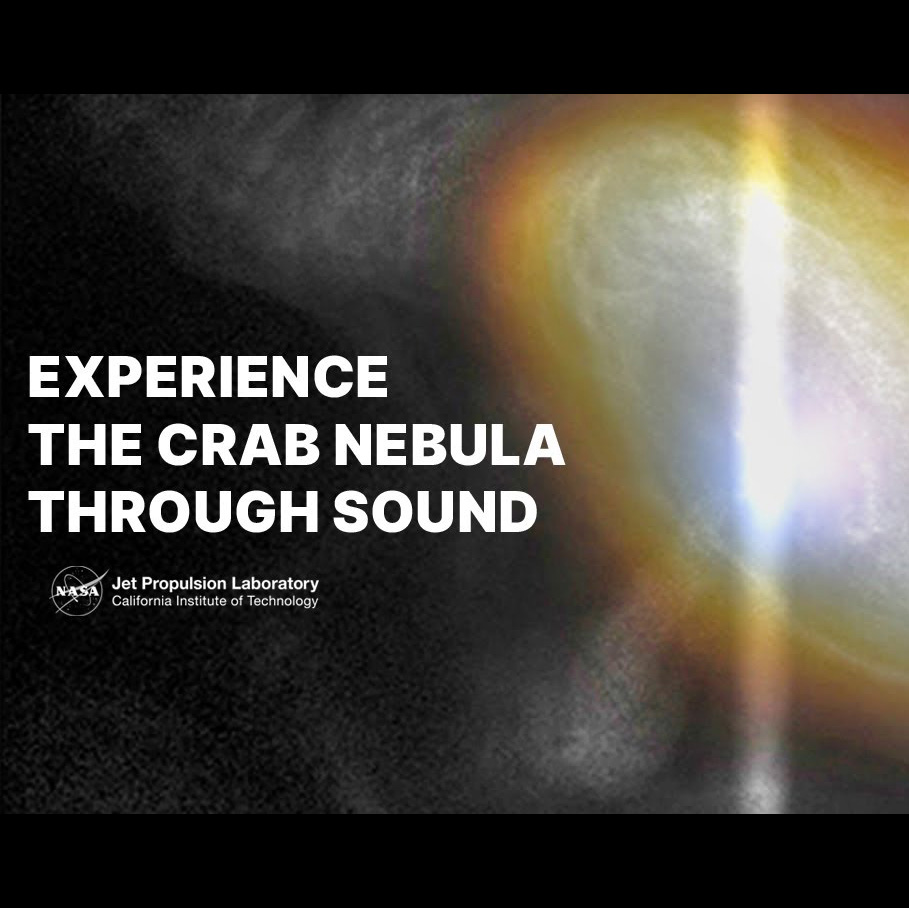

Visual
Algumas frequências pedem imagem.
O disco de ouro e a sonificação mostram como memória, padrão e vibração também podem ser vistos.
Tema: ressonância
Do compasso ao colapso de uma estrela, frequência é a forma mais elegante de repetir o mundo.
Visual
O disco de ouro e a sonificação mostram como memória, padrão e vibração também podem ser vistos.

Voz, música e presença humana guardadas para atravessar o vazio.

A Nebulosa do Caranguejo lembra que dado também pode soar.
Ressonância
No corpo, ele vira batida. No céu, vira ciclo, órbita, pulso e maré.
Convite
O olhar percebe brilho. O ouvido percebe repetição. Os dois se encontram aqui.
Três eixos
Cada card olha para a mesma ideia por um ângulo diferente.
Pulso
Carregando seleção...
Clique e troque o foco.
Órbita
Carregando destaque...
Clique e mude o foco.
Ressonância
Carregando insight...
Clique e gere outra leitura.
Essência
Mesmo quando mudam matéria, escala e linguagem, certas formas insistem em voltar.
Fecho
O que parece abstrato deixa de ser distante quando começa a vibrar.
Voltar aos eixos